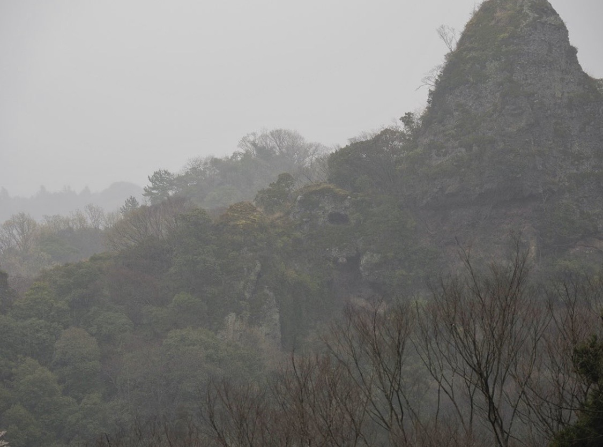

大分県国東半島で展開しているプロジェクト。
国東半島での暮らしの跡が感じられる場所で、写真を介して見えてくる気づきを共有する。年単位での長期間にわたる展示により、作品やその場所に古くから残されていたもの、周辺環境も時を重ね、単なる鑑賞とは違った体験を提供している。
自分が写真をはじめてからこれまで継続してきた「見ること」を深めること。
写真を見れるようになることは、写真を撮ることが上手くなるだけでなく、日々の目線やものを見る目を深めることにもつながっています。
写真を見る目を深めたい方、いろいろな写真について学びたい方、イベント開催のご相談や個別にも相談を受け付けています。お問い合わせください。
大分空港からほど近いところで暮らしています。お近くにお越しの際は気軽にご連絡ください。
megumu.takasaki@gmail.com高崎 恵／Megumu Takasaki
1999年、大学在学中に死期の迫った人と関わる事で、過ぎゆく時の流れを強く意識したことがきっかけとなり写真をはじめる。
2001年に制作した「0」を境に、日本古来の自然崇拝に関心を抱くようになる。
2008年、写真評論家 谷口雅氏と出会い、東京綜合写真専門学校に入学。
2009年、スイス・ローザンヌ エリゼ美術館が主催する企画展「reGeneration2」に選出され、その巡回展がアルル国際写真フェスティバル、Aperture Foundation等、世界11ヵ国19都市で開催される。
2011年~2013年には母校の写真学校で講師を務めながら、the AIPAD photography show New York等のアートフェアに出品する。
2016年、作品取り扱いギャラリーであるPicture Photo Space代表、相野正人氏が他界。発表の場を失くす。
2019年、終の住処を求め、神仏習合の発祥の地である大分県国東半島へ移住。
2021年より、作品「Peninsula」を国東半島の空き家等を借りて展示する、「Studio Nest Project」を開始。国東半島に流れてきた時間や歴史を、鑑賞者と共有する試みを続けている。
また同年より写真ワークショップを主催。誰もが写真と密接に関わる現代で、写真のあり方や見え方について幅広い世代と考察している。